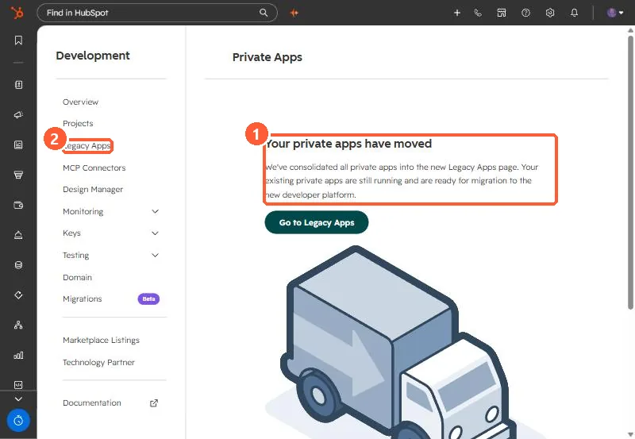

Short answer
Private apps now live under Development > Legacy Apps, and the old Private Apps page says so. HubSpot's changelog says creating new legacy private apps is being removed: September 28, 2026 for accounts created on or after that date, and October 26, 2026 for older accounts. Existing private apps keep working. For new in-account integrations HubSpot points to Service Keys under Settings, Integrations, Service Keys.
1. Where they went
Opening the old Private Apps link in my demo portal shows a moved message and a button to Legacy Apps.


2. The dates
- Accounts created on or after September 28, 2026: creation disabled that day.
- Accounts created before September 28, 2026: creation disabled October 26, 2026.
- Existing legacy private apps are not affected for now.
3. What to do
- If you need a new token soon, check your account's date before assuming you can still create a private app.
- For new system-to-system integrations, use Service Keys, which need Developer Platform projects version 2026.09 or later.
- Keep an inventory of every private app, its scopes and what depends on it, so migration later is planned rather than urgent.